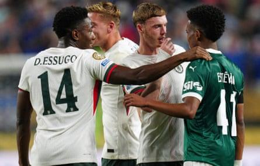

T he good news for Chelsea is that Cole Palmer and Estêvão Willian will be on the same team when they next share a pitch. Even better, it seems two of the most gifted young forwards around already have a connection. They were on opposite sides in Philadelphia on Friday night but friends when it was over, sharing a warm embrace after Chelsea’s victory over Palmeiras in the Club World Cup, swapping shirts and perhaps thinking about how much fun they are going to have at the expense of opposition defences when they line up together next season.
It was a heartwarming sight. Palmer offered a reminder that he remains the main man at Chelsea, performing with craft and intelligence during a first half in which he opened the scoring in smooth fashion, but Estêvão vied for centre stage on his final appearance for Palmeiras. It was an extraordinary performance given the context. Anticipation has been building ever since Chelsea agreed a £52m fee with Palmeiras for Estêvão in May 2024. The 18-year-old has remained on an upward trajectory after staying with Palmeiras for one more season, but any hopes of keeping the hype machine from going into overdrive with a player regarded as the best Brazilian youth product of his generation had disappeared long before he found himself trying to knock his future employers out of the Club World Cup.
The pressure on Estêvão was extreme. He has delivered a string of wonderful goals and performances for Palmeiras over the past 12 months but he has been criticised by the Brazilian media during his time in the US. Abel Ferreira, the charismatic Palmeiras manager, has had to leap to the youngster’s defence. There have been some tense press conferences. Nonetheless it was only human nature to wonder if Estêvão was capable of performing against Chelsea. Would his heart really be in it? Would he hold back? Would he be too desperate to impress?
Now, of course, the challenge will be keeping expectations at realistic levels when Estêvão arrives in England. He has been called Messinho (Little Messi) because of his dribbling ability but is determined to follow his own path. This kid is fearless. Questions about whether he will be able to adapt to the physicality of the Premier League are standard. Against Chelsea , there could be no better taste of what defenders in England are like than by being marked by Marc Cucurella. The Spaniard is tenacious, niggly, and very good at his job. It was striking to watch him kick lumps out of Estêvão during the first half. It was as if Cucurella was trying to see if the kid was made of the right stuff.
The response was resounding. Estêvão kept looking for the ball and kept trying to make things happen. At one point he darted in from the right, surging across the grass, Cucurella left desperately trying to cling on to his shirt. It was easy to imagine Cucurella going back into the dressing room after full time and telling his teammates that they won’t have to worry about whether that slight, spindly kid on the Palmeiras right will be able to do it on a wet, windy Tuesday night in Stoke. Only, the rest of Chelsea’s players had already seen it for themselves. It was Estêvão who dragged Palmeiras into the contest, spinning into space in the 53rd minute and catching Robert Sánchez out by shooting from the tightest of angles. The ball flew past a startled Sánchez, who could not even be blamed for being beaten at his near post, and when it went in there was no holding back from Estêvão as he celebrated.
Estêvão (right) talks to Cole Palmer and his new Chelsea teammates after the Club World Cup quarter-final.Photograph: Derik Hamilton/AP
Palmeiras could not quite get the job done, though. Afterwards the mood was bittersweet. Named the player of the match, Estêvão was obliged to speak to the media. He sat next to Ferreira and thanked the man who treats him as a son. Ferreira was tender, whispering advice to Estêvão whenever he seemed unsure what to say. “I love this guy so much,” Estêvão said. “I thank God that Abel and Palmeiras are in my life.”
Ferreira, ignoring the pain of losing to a late own goal, returned the praise. He spoke of Estêvão’s talent but also described him as an amazing person. The Portuguese admitted that he was unsure if Estêvão was big enough when he was promoted to the first team, only for those doubts to go away soon enough. “He looks slim, but he is strong,” Ferreira said. “I told Estêvão: ‘We are excited for you to join,’ but he didn’t understand a single word I said,” Palmer offered.
That nod towards the language barrier was a reminder that Estêvão must be given time to settle in England. “Take care of him,” Ferreira said, sounding a lot like Sven-Göran Eriksson urging the English media to protect Wayne Rooney in 2006. “It’s the first time he will leave his country. In England the sun appears two or three times a year and the night comes early but Chelsea have conditions to support him.”
It is good that there is no pressure on Enzo Maresca to rush Estêvão. Chelsea have plenty of attacking options and know that leaving South America will not be easy. Even so, it is telling that there is no plan to send Estêvão out on loan. Chelsea know they have a special talent on their hands. No wonder they cannot wait to see Estêvão and Palmer together.